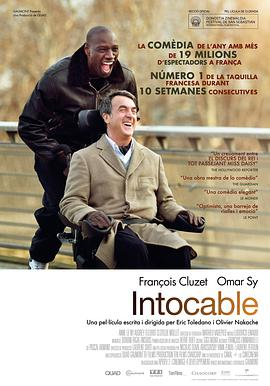
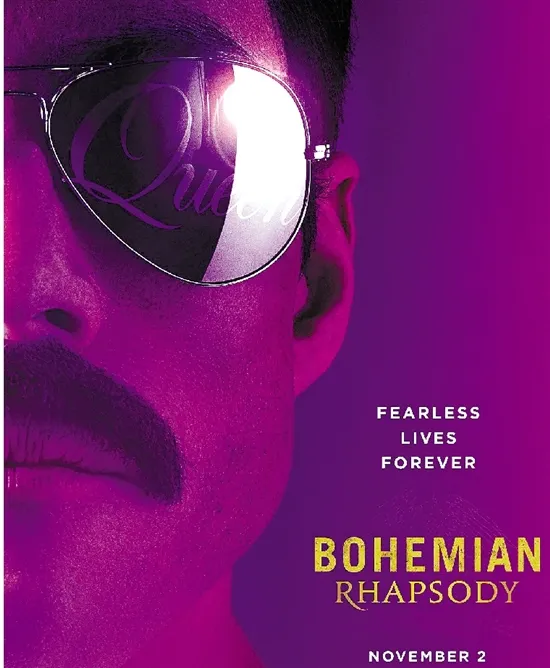
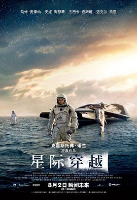
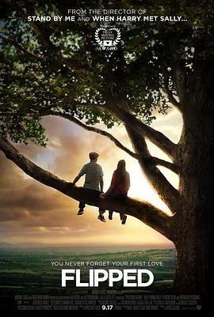
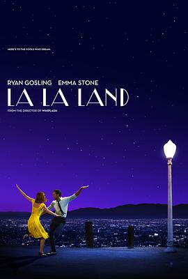

🎉Welcome!🎉
This website contains no advertisements😀, please feel free to check
| Rank | Cover | Title | director | Released year | Website maker's ranking | Detailed links |
|---|---|---|---|---|---|---|
|  | 1 | Intouchables | Olivier Nakache/Eric Toledano | 2011 | 9.9/10 | |
|  | 2 | Bohemian Rhapsody | Anthony McCarten/Peter Morgan | 2018 | 9.5/10 | |
|  | 3 | Interstellar | Christopher Nolan | 2014 | 9.4/10 | |
|  | 4 | Flipped | Rob Reiner | 2010 | 9.3/10 | |
| 5 | The Pursuit of Happyness | Gabriele Muccino | 2006 | 9.2/10 | ||
|
6 | Murder on the Orient Express | Sidney Lumet | 1974 | 9.1/10 | |
|  | 7 | La La Land | Damien Chazelle | 2016 | 8.9/10 | |
|
8 | A Beautiful Mind | Ron Howard | 2001 | 8.8/10 | |
|
9 | Catch Me If You Can | Steven Spielberg | 2002 | 8.7/10 | |
|
10 | The King's Speech | Tom Hooper | 2010 | 8.5/10 |